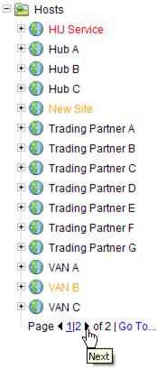

You can use a web GUI user interface to access Cleo Harmony, Cleo VLTrader, or Cleo VLNavigator software. To configure and set up the parameters of the web browser service, see Configuring Cleo VersaLex for web browser.
To run the Cleo Harmony or Cleo VLTrader application from a web browser, when not running through a Cleo VLProxy connection, you must enter the proper URL in the browser (e.g., http(s)://VeraLexComputerIP: http(s)Port/VersaLexResourcePath). To run VersaLex from a web browser, when running through a VLProxy connection, the VersaLex serial number must be supplied as a parameter (e.g., http(s)://VLProxyComputerIP: http(s)Port/VersaLexResourcePath?serial=LX7589-YU2693) or concatenated to the resource, preceded by a dash (e.g., http(s)://VLProxyComputerIP: http(s)Port/ VersaLexResourcePath-LX7589-YU2693).
- associate external IDs with new or existing VersaLex host/mailbox aliases
- limit the contents of the UI
- provide user authentication
|
All parameter names and values are case insensitive except for ID, alias, and password values.
To run Cleo VLNavigator from a web browser, you must enter the proper URL in the browser (e.g,. http(s)://VeraLexComputerIP:http(s)Port/VLNavigatorResourcePath).
When Cleo VLNavigator logins are not in use (see Require Loginsabove), the web UI supports two modes, each password protected:
|
The passwords are defined under the Harmony tab or VLTrader tab of the Web Browser Service.
The native and web browser user interfaces are virtually identical in layout and capability. Because of this, only one help system is provided (with specific references to the native GUI). There are, however, a few fundamental differences between the native and web browser GUIs:
- The web browser GUI does automatically refresh and scroll the messages pane with new messages like the native GUI, but not with the same frequency. The default automatic refresh rate can be set as low as 1 second or overridden in a browser session (in the upper right-hand corner of the main page), but depending on the network connection speed and load, the effective refresh rate may be higher than configured. A page refresh can also be forced by clicking the refresh button (also in the upper right-hand corner of the main page).
- The native GUI efficiently scrolls large trees. However, with the web browser GUI,
large trees can cause long refresh delays. Because of this, the web browser GUI
introduces tree paging.
For trees, a Page node is inserted at the bottom of a page of nodes. Click on the left and right arrows or on the specific page numbers to page back and forth through the entire set.
 To jump to any page number, click Go To...
Type in the desired page number, and if the tree supports searching, optionally type a (partial) alias. Click OK.
For both the active and preconfigured trees,
 host and local host nodes,
host and local host nodes,  mailbox nodes, host action nodes,
mailbox nodes, host action nodes, trading partner nodes, action nodes, and service nodes are paged when
necessary. In , certificate nodes are also paged when necessary.
trading partner nodes, action nodes, and service nodes are paged when
necessary. In , certificate nodes are also paged when necessary. - The few places where drag-and-drop is supported in the native GUI are not supported in the web browser GUI.
- Although the main page does automatically refresh, objects (e.g., hosts, mailboxes, actions, etc.) just created in another native/web browser GUI session are not shown in the tree until Refresh in the tree menu is selected, or the refresh button is clicked, or some other page submit occurs. The same is true for renames or deletes, unless the renamed/deleted tree node is currently selected. Currently running actions (and the Local Listener) are not colored green as in the native GUI.
- Like the native GUI, always exit the web browser GUI by selecting . If the web browser itself is exited without exiting VersaLex first, the Cleo Harmony service/daemon will take about a minute before it recognizes that the user has disconnected.
While the Cleo Harmony web browser interface is active, the standard web browser refresh, back, and forward buttons should not be used. To force refresh, instead use the refresh button in the upper, right-hand corner of the Cleo Harmony web browser GUI. Instead of the back and forward buttons, navigate through the Cleo Harmony windows as if you were using the native GUI.
Do not attempt to have different tabs in the same browser session accessing multiple isntances of Cleo Harmony or even the same instance of Cleo Harmony multiple times. In this case, cached information may cause you to be directed to the incorrect Cleo Harmony session.